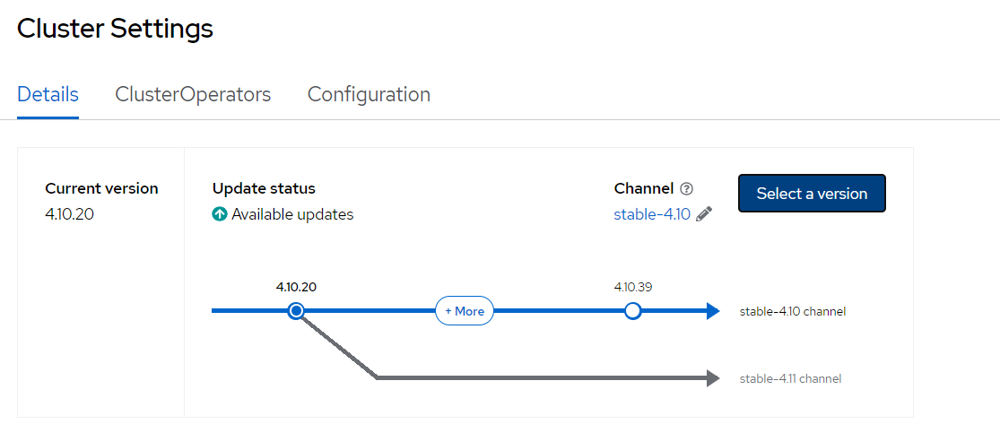

Upgrades
Introduction#
Azure Red Hat OpenShift (ARO) provides fully-managed cluster updates. These updates can be triggered from inside the OpenShift Console, or scheduled in advance by utilizing the Managed Upgrade Operator. All updates are monitored and managed by the Red Hat and Microsoft ARO SRE team.
For more information on how OpenShift's Upgrade Service works, please see the Red Hat documentation.
Upgrade using the OpenShift Web Console#
-
Return to your tab with the OpenShift Web Console. If you need to reauthenticate, follow the steps in the Access Your Cluster section.
-
Using the menu on the left Select Administration -> Cluster Settings.

-
Click on the Not Configured link under the Upgrade Channel heading.

Upgrade channel is not configured by default
By default, the upgrade channel (which is used to recommend the appropriate release versions for cluster updates), is not set in ARO.
-
In the Channel field, enter
stable-4.10to set the upgrade channel to the stable releases of OpenShift 4.10 and click Save.
-
In a moment, you'll begin to see what upgrades are available for your cluster. From here, you could click the Select a version button and upgrade the cluster, or you could follow the instructions below to use the Managed Upgrade Operator.
Do not perform an upgrade at this stage

Upgrade using the Managed Upgrade Operator#
The Managed Upgrade Operator has been created to manage the orchestration of automated in-place cluster upgrades.
Whilst the operator's job is to invoke a cluster upgrade, it does not perform any activities of the cluster upgrade process itself. This remains the responsibility of OpenShift itself. The operator's goal is to satisfy the operating conditions that a managed cluster must hold, both pre- and post-invocation of the cluster upgrade.
Examples of activities that are not core to an OpenShift upgrade process but could be handled by the operator include:
- Pre- and post-upgrade health checks.
- Providing additional worker capacity during the upgrade period to ensure you have sufficient capacity when nodes are updated.
Configuring the Managed Upgrade Operator for ARO ensures that your cluster functions as you need it to during upgrades. The process of executing upgrades is shown here:

-
First, let's check for available upgrades on your current upgrade channel. To do so, run the following command:
Warning
If the output of the following command is
parse error: Invalid numeric literal at EOF at line 1, column 5you may not have set thestable-4.10channel as instructed earlier, or there are no available upgrades and you should skip the rest of these steps. -
Next, let's use that information to populate a manifest for the Managed Upgrade Operator to use. To do so, run the following command:
cat <<EOF | oc apply -f - apiVersion: upgrade.managed.openshift.io/v1alpha1 kind: UpgradeConfig metadata: name: managed-upgrade-config namespace: openshift-managed-upgrade-operator spec: type: "ARO" upgradeAt: $(date -u --iso-8601=seconds --date "+1 day") PDBForceDrainTimeout: 60 capacityReservation: true desired: channel: "stable-4.10" version: "4.10.47" EOFThis manifest will schedule an upgrade to 4.10.47 for 1 day from now, allow nodes which are blocked by PodDisruptionBudgets to drain for 60 minutes before a drain is forced, and sets a capacity reservation so that workloads are not interrupted during an upgrade.
-
Once created, we can see that the update is pending by running the following command:
oc -n openshift-managed-upgrade-operator get \ upgradeconfig.upgrade.managed.openshift.io/managed-upgrade-configThe output of the command will look something like this:
Congratulations! You've successfully scheduled an upgrade of your cluster for tomorrow at this time. While the workshop environment will be deleted before then, you now have the experience to schedule upgrades in the future.